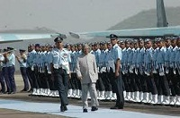
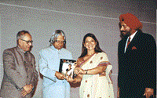
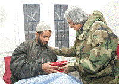

About Dr. APJ Abdul Kalam
Avul Pakir Jainulabdeen was the 11th President of India from 2002 to 2007. A career scientist turned politician, Kalam was born and raised in Rameswaram, Tamil Nadu, and studied physics and aerospace engineering. He spent the next four decades as a scientist and science administrator, mainly at the Defence Research and Development Organisation (DRDO) and Indian Space Research Organisation (ISRO) and was intimately involved in India's civilian space program and military missile development efforts. He thus came to be known as the Missile Man of India for his work on the development of ballistic missile and launch vehicle technology. He also played a pivotal organizational, technical, and political role in India's Pokhran-II nuclear tests in 1998, the first since the original nuclear test by India in 1974.
Kalam was elected as the 11th President of India in 2002 with the support of both the ruling Bharatiya Janata Party and the then-opposition Indian National Congress. Widely referred to as the "People's President," he returned to his civilian life of education, writing and public service after a single term. He was a recipient of several prestigious awards, including the Bharat Ratna, India's highest civilian honour.
While delivering a lecture at the Indian Institute of Management Shillong, Kalam collapsed and died from an apparent cardiac arrest on 27 July 2015, aged 83. Thousands including national-level dignitaries attended the funeral ceremony held in his hometown of Rameshwaram, where he was buried with full state honours.
Awards
| Year of Award | Name of Award | Awarding Organization |
|---|---|---|
| 2014 | Doctor of Science | Edinburgh University, UK |
| 2013 | Von Braun Award | National Space Society |
| 2009 | Hoover Medal | ASME Foundation, USA |
| 2009 | International von Kármán Wings Award | California Institute of Technology, USA |
| 2007 | King Charles II Medal | Royal Society, UK |
| 2000 | Ramanujan Award | Alwars Research Centre, Chennai |
| 1998 | Veer Savarkar Award | Government of India |
| 1997 | Bharat Ratna | Government of India |
| 1990 | Padma Vibhushan | Government of India |
| 1981 | Padma Bhushan | Government of India |
Books written by Dr. Kalam
Wings of Fire: An Autobiography by A P J Abdul Kalam, Arun Tiwari; Universities Press, 1999.
Wings of Fire
India 2020: A Vision for New Millennium
India 2020: A Vision for the New Millennium by A P J Abdul Kalam, Y. S. Rajan; New York, 1998.
Envisioning an Empowered Nation by A P J Abdul Kalam with A Sivathanu Pillai; Tata McGraw-Hill, New Delhi
Envisioning an Empowered Nation
Ignited Minds: Unleashing the Power Within India by A P J Abdul Kalam; Viking, 2002
Ignited Minds
Memorable Moments
  